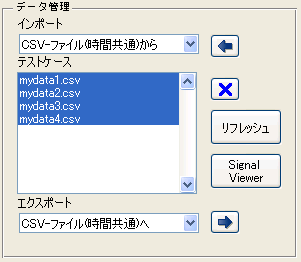

sldvmisscovtool 実行例
(1) sldvmisscovtoolを実行します。
sldvmisscovtool
(2) 「データ管理」パネル > 「インポート」よりデータ読み込み手法を選択し、

をクリックします。 ※読み込み手法はプラグイン形式になっており、選択した手法により読み込み方法が異なります。 ここでは、サンプルとして提供している「CSV-file(時間共通)から」が選択され、フォルダ「cruise_control_data」内のサンプル csvファイルが読み込まれたものと仮定します。:

(3) 「Signl Viewer」ボタンをクリックすることにより、「テストケース」リストボックス上で選択されたデータをグラフに表示します。
(4) 「対象モデル」ペインにて、

をクリックし、対象となるモデルを選択します。

を選択した場合には、bdrootで与えられるモデルが対象となります。ここでは、本デモに付属のサンプルモデル「sldvmiscovtool_sample.mdl」が選択されたものと仮定します。

(5) 「カバレッジ」パネルにて「カバレッジの計測」ボタンをクリックすることにより、「テストケース」リストボックスで選択されているデータに対するシミュレーションが順次行われ、累積カバレッジデータがベースワークスペース上に「covData」として保存されます。
※ 「ブロックを色分け」にチェックを入れてカバレッジの計測を行いますと、ブロック色によりカバレッジの到達状況を確認できます。

(6) 「レポートの表示」ボタンをクリックすると、上述「covData」よりカバレッジレポートが生成され、表示されます。CSVファイルには未達カバレッジが存在することが確認できます。
(7) 「SLDV」パネルにて「未達カバレッジの解析」ボタンをクリックすることにより、、「テストケース」リストボックスで選択されているデータに対するシミュレーションで未達成であったカバレッジ対象に到達するテストベクタを自動生成します。

(8) 「結果のマージ」パネルにて「統合レポート」をクリックすると、「データ管理」で与えられたテストケースと「未達カバレッジの解析」によって自動生成されたテストケースを統合したカバレッジレポートが生成されます。


(9) 「テストケースをマージ」をクリックしますと、「データ管理」で与えられたテストケースと、「未達カバレッジの解析」によって自動生成されたテストケースをマージし、新たなハーネスモデル上のSignal Builderブロックにテストケースを統合します。